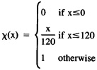
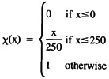

by Abraham Kandel
CRC Press, CRC Press LLC
ISBN: 084934297x Pub Date: 11/01/91
|
|
Fuzzy Expert Systems
by Abraham Kandel CRC Press, CRC Press LLC ISBN: 084934297x Pub Date: 11/01/91 |
| Previous | Table of Contents | Next |
Let α be some threshold then if CF > α then rule I is fired and the compiled premise is placed on the blackboard.
| K1 | K2 | K3 | LB | UB | CF | RN |
|---|---|---|---|---|---|---|
| Key word 1 | Key word 2 | Key word 3 | LB1 | UB1 | CF | I |
When the inference procedure has finished (no more rules can be fired), the conclusion(s) is printed along with its certainty factor.
Once all inferences have been made and all conclusions stated, the user may elect to ask questions of the expert system. The most important question that the user can ask is, “How did you arrive at conclusion I?.” The question-answer dialogue is conducted via the Question-Answer Program (QAP) and is explained in the next section.
The Question-Answer Program (QAP) is used to retrieve the chain of firings in the inference procedure and display all rules and data that were involved in the firing of that rule.
The user may invoke the program by typing:
explain rule n
where n is any number. First the QAP checks to ensure that rule n is in the list of fired rules (LR). If the rule was not found in the LR, then the program is terminated (after an error message is displayed to the user). If the rule number is found in the list of fired rules, then the process continues.
The QAP uses the bit matrix (BM) to retrieve rules and data. As was mentioned (Equation 13),
BM [I,J] = 1
means that rule I may contribute to the firing of rule J. But it also means that rule J can be fired from rule I. Using this logic, we can derive a general recursive algorithm for retrieving the rules and data which were involved in the firing of the rule in question. The algorithm is presented in a Pascal-like language.
PROCEDURE conclusion (k); {k is the rule number to be retrieved}
FOR I = 1 to n do {n is the number of rules in the knowledge base}
IF BM[I,K] = '1' THEN
BEGIN
find out if rule I is in LR; {if rule I was used in firing rule K}
if so then
BEGIN
print the conclusion of rule I;
activate procedure → conclusion(I);
END;
END;
If nothing is found then conclude that the system has inferred that conclusion K came from user-supplied data.
Since the preceding procedure is activated recursively, it is guaranteed to find all the rules and data which were involved in the firing of rule K.
The expert system discussed here is a general purpose expert system. In other words, the expert system is not domain dependent. The user can provide knowledge about any domain (in the form discussed in Section IV.A.) and the expert system should perform as described. The main achievements in this work are:
The application program was written in Pascal and we feel that it fully satisfied our goals in writing the expert system.
Example of mapping table
| for the variable PEOPLE | ||
|---|---|---|
| ADJECTIVE | LB | UB |
| almost | x - 10% | x - 1 |
| more or less | x - 10% | x + 10% |
| over | X + 1 | x + 10% |
| much more then | 2x | ∞ |
Examples of characteristic function
For the variable Old

For the variable Weight

| Previous | Table of Contents | Next |